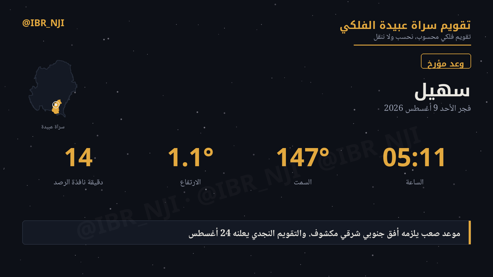
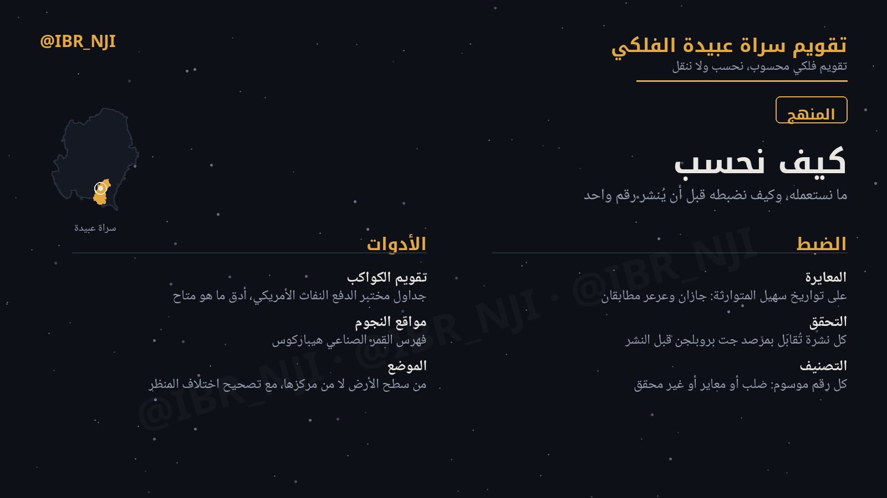
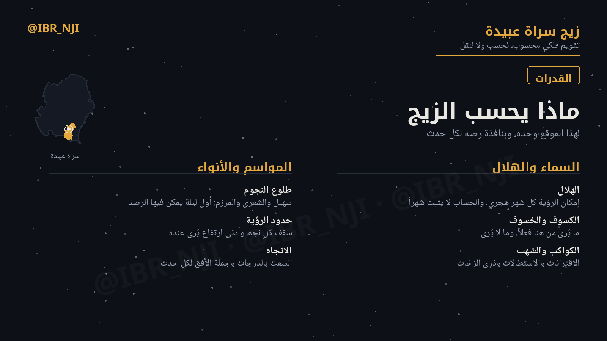
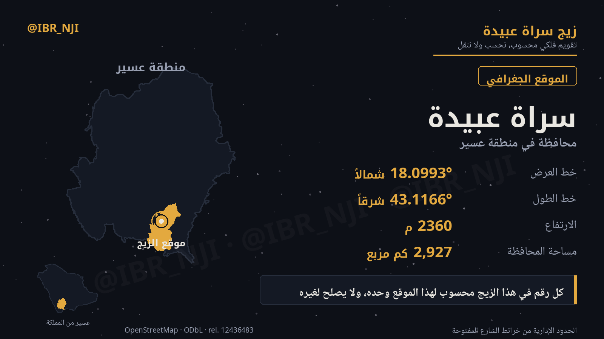

صفحاتُ هذا المجال
المعلومة نفسها هي البوابةصور السماء
من فهرس هيبارخوس، لا بالظنّصورتان كما وصفهما ابن قتيبة الدِّينَوَريّ في «الأنواء»: مواضع نجومهما محسوبة، ودرب التبانة من الإحداثي المجرّي، والمقياس متساوٍ في المحورين فالصورة على هيئتها الحقيقية.

الشِّعريان والمِرْزَمان
الجوزاء وكلبها، والذراع المبسوطة من الأسد. المِرْزَم وصفُ قرينٍ يُضاف إلى متبوعه — فلكلّ شِعرى مِرزمُها يسبقها، ولا يكون الشيء مِرزمَ نفسه.

الأسد — صورة تسع ربع السماء
ليس بُرجاً عندهم، بل صورة تمتدّ من الذراعين إلى السِّماك، إحدى وتسعون درجة، وفيها ثماني منازل من الثماني والعشرين.
المنهج
كيف يُحسب كل رقمالمحرّك
تقويم الكواكب JPL DE440s — أدقّ ما هو متاح مدنياً — ومواقع النجوم من فهرس هيباركوس، والمواضع من سطح الأرض عند الموقع لا من مركزها، والفرق في القمر درجة كاملة.
الفروض المعلنة
- الأفق مستوٍ وdip = 0 — معلَن وملتزَم.
- الطلوع الاحتراقي: ارتفاع حقيقي ≥ 1° والشمس على عمق 9°.
- رصد الكواكب: الشمس على عمق 6° — الشفق المدني.
- الضغط 760 hPa والخفوت k = 0.102.
المعايرة على المتوارث
| الموقع | المتوارث | الحساب |
|---|---|---|
| جازان | ٧ أغسطس | ٧ أغسطس ✓ |
| عرعر | ٨ سبتمبر | ٨ سبتمبر ✓ |
| الرياض | ٢٤ أغسطس | ٢٣ — بيومٍ معلَن |
ولا عتبة واحدة تجمع الثلاثة — والفرق معلن بلا معامل تصحيح.
التحقق الخارجي
| الكمية | Horizons | محرّكنا | الفرق |
|---|---|---|---|
| ارتفاع المشتري | 6.367° | 6.35° | 0.02° |
| استطالة الزهرة | 45.8919° | 45.892° | 0.0001° |
| استطالة الهلال | 12.0525° | 12.0505° | 0.002° |
كل نشرة تُقابَل بإحداثي الموقع نفسه قبل النشر.
كنتُ إذا أصبحتُ في حاجةٍ … أستعملُ التقويمَ والزِّيجا
فأصبح الزِّيجُ كتصحيفهِ … وأصبح التقويمُ تعويجا
شكوى عمرها ألف سنة من تقويمٍ يُنقل ولا يُحسب، فيفسد بفساد أصله. وهذا بعينه ما نعالجه.
قواعد الصدق
وحدود العمل تُعلَن كنتائجهما نلتزمه
- الهندسي رقم قاطع، والاحتمالي نافذة موصوفة بما يؤخّرها — والغبار أولها.
- المعيار يُنشر مع الرقم دائماً.
- ما لم يُتحقق منه لا يُنشر، وكل رقم مصنَّف في سجل معلن.
- الرقم يُفصل عن تفسيره — وما لم يُحسب يُوسَم تفسيراً مقترحاً.
وفي الهلال حدٌّ لا يُتجاوز
الحساب يحسب الإمكان الفلكي للرؤية فقط — لا يُثبت شهراً ولا ينفيه، والإثبات لجهة الإفتاء وحدها.
صفحة الهلال ←وما هو قيد التحقق
- جداول المنازل الشعبية — تواريخ منقولة لم تُقابل بمطبوعة، فلا تُنشر حتى يُتحقق.
- عتبة الرؤية بدلالة اللمعان — معطَّلة حتى يحسمها الرصد.
- النثرة — حُسبت بنجم مفرد وهي لطخة، فحسابها ناقص ومعلوم.
البطاقات
كما تُنشر على X



وفي الأحداث
إحالةٌ سياقية — وبيتُها لوحتُهاوالأحداثُ المؤقّتة — أهلّةً وخسوفاً وزخّاتِ شهبٍ واقتراناتٍ — موضعُها لوحتُها، لا هذا المجال. وفيها موعدُ كلٍّ وعدُّه التنازليّ ومعياره. لوحة الأحداث ←